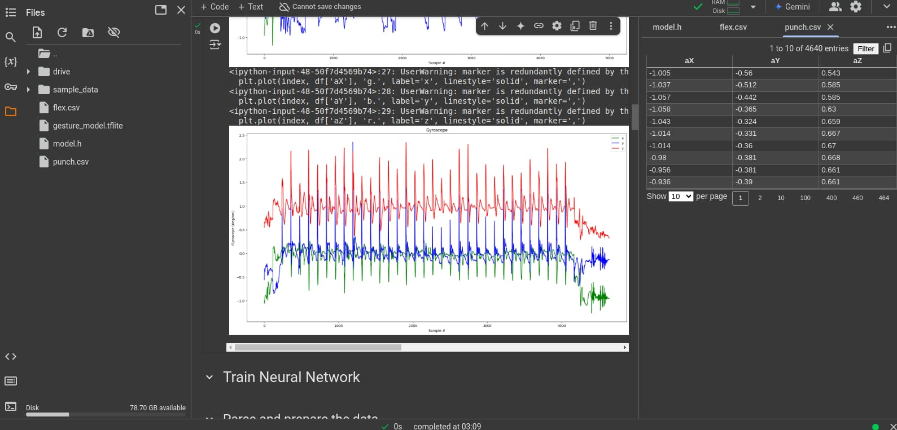

Week 1: Initial setup completed!


Week 2: we did some experiment!


LED shows my name!

MicroSD and DATALOG Link

Click here to open the datalog text file
Real Time Clock IMAGE AND VIDEO
Buzzer Video
BLUETOOTH IMAGE AND VIDEO


Week 3: VOLTAGE DIVIDER IMAGE AND VIDEO
HARDWARE SETUP

VOLTAGE DIVIDER OUTPUT IMAGE AND VIDEO

Week 4: we worked with OLED display(still Lab3)
OLED DISPLAY
DATALOG READINGS


BLUETOOTH CONNECTIVITY


Week 5:we made gesture recognizer and used it for punch and flex gestures(phase 1)
Flowchart
Code

Output
Punch Code

Punch graph
punch data
Flex Code

Flex graph
flex data
Randomizing and splitting the data
Training data

graphloss

Running test data and its output